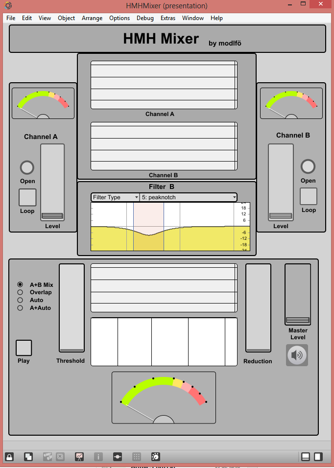

Here's a list of the projects that I have published.
Vult is a simple programming language made to produce high-performance algorithms that can run on small processors like Arduinos. Vult provides features that simplify developing DSP algorithms, for example audio effects and synthesizers.
You can find the main project page here: Vult
ModelPlug is a library that I developed for SystemModeler. ModelPlug allows you to connect simulation models with Arduino boards and use them to input/output signals.
You can find the library page here: ModelPlug
Microbruto
The MicroBruto is a digital synthesizer with controllers inspired by the MicroBrute. I tried to imitate the functions of the oscillator, the envelope, filter, LFO and most important: the modulation matrix.
You can get it from maxforlive.com MicroBruto.
Mocotron
Mocotron is an imitation of the Monotron synthesizer made in Reaktor.
The whole model was made using Reaktor Core what makes it very cpu-efficient.
You can download the instrument in the Reaktor user library: Mocotron.
Monobleep-Meeblitron
This is a hybrid synthesizer that I hacked during the MIDIHACK 2014 in Stockholm.
This synthesizer combines a Monotron and a Meeblip. Both synthesizers are controlled by a Raspberry Pi which receives OSC messages.

You can find the code here: Monobleep-Meeblitron. And the project page here: Hackathon.io.
FirmataTest.js
This is a small program that I made to learn/test Atom-shell (now Electron) and Angular.js. This program allows you to communicate and configure Firmata boards like Arduino.
You can find the source code here: FirmataTest.js.
Ocaml Firmata
This is a Ocaml library that allows you to access Firmata boards.
You can find the source code here: Ocaml Firmata.
Teensy-Braids
I took the source code of the Mutable-Intruments Braids and adapted it to a Teensy board with a nice OLED display. Then I 3D-printed a case and made it a cool synthesizer.
You can get the source code here: Teensy-Braids.
HMH Mixer
This is an educational project I made to get a better understanding on mixing sound. Mixing is all about hearing but it’s always ok to get a little help from the eyes; that’s the place of spectrum analyzers. When mixing two sounds we have to be careful on how they interact with each other in frequency domain. A bad mix may have moments in which certain frequencies get to loud or where one sound shadows the presence of other.
Being capable of detecting (and fixing) those problems of a mix requires training and talent. Since I don’t have to much training yet (lets not talk about the talent) I made this program to help me hear. The HMH (Help-Me-Hear) Mixer provides features that can help you in times of doubt.

You can download this patch here: HMH Mixer.
Meeblip Editor
This is an editor for the Meeblip synthesizer. I use it with the Meeblip micro.
You can get the patch here: Meeblip Editor.
WaterBobot
I assembled this project using the Rover 5. It uses an Arduino for the low-level control (current balancing, speed control) and a Raspberry Pi to receive OSC messages.
I prototyped the whole thing with Max, but the final version uses PD in the Raspberry Pi. It also works with Mira.
You can find the patches and source code here: WaterBobot.
Extendra
I made this board to add more I/O to other projects. It uses a PIC16F1516 and is controlled by I2C.
You can find the source code here: Extendra.
HackPrism
This is program inspired by the app SoundPrism. It does no have all the features of SoundPrism but it allows you hack the code and personalize it.
You can get the source code here: HackPrism.
Noname Synth
This is a small synthesizer I made by reusing parts from other projects. Internally it has an XMOS processor and uses phase distortion synthesis.
QuineHp
This was the first programs that I made in the HP49G+ calculator using the C compiler (I have done many for the HP49G). It is a logic function minimizer using the Quine-MacCluskey method.
You can download the program here: QuineHp.
SCSS
SCSS (Switched Circuits Symbolic Solver) was a project that started back in my university days. I wanted to create a Symbolic Simulator of electric circuits using the HP49G calculator, and I made it. The problem was that I could only solve very small circuits because the calculator was not powerful enough. Some years later I rewrote the code for Maple and became more useful.
The program takes as input a SPICE-like netlist of components and gives you back the state space equations. The cool thing is that the code is not constrained to a few elements. You have the possibility of creating more complex components.
I have used this program to obtain mixed electric-magnetic symbolic models of power converters.
You can find the source code here: SCSS.